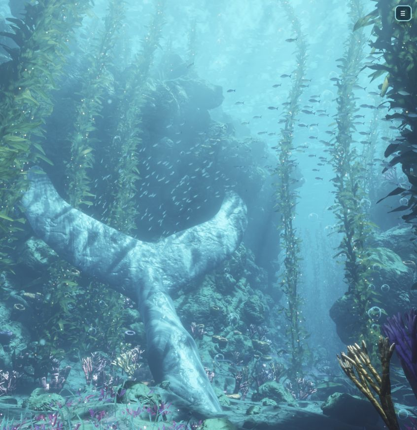
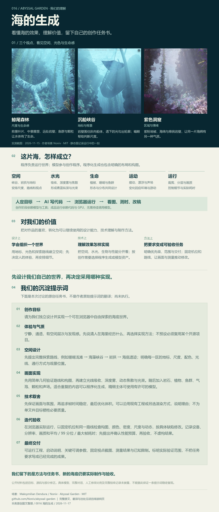

空间的尺度
让人记住一个地方
巨大的鲸尾成为视觉锚点。高耸的海藻围住它，鱼群和漂浮颗粒把空隙变成有生命的水体。
- 空间
- 近处叶片、中景鲸尾、远处岩壁，形成前后层次。
- 光色
- 水面明亮，深处转蓝；远处的轮廓被水体柔化。
- 动态
- 运行时可见植被摆动、鱼群游动和颗粒漂移；静态图只保留其中一刻。
016 / 海底世界观察手记
从一个可运行的程序化海底，读懂空间、光照与性能。
再把理解沉淀为我们自己的创作任务书。
研究对象 · Abyssal Garden
Noniv 的浏览器海底漫游作品。这里用真实运行截图阅读它。

我们真正想理解的
怎样把“想要一片海”
变成可以探索的世界。
READING MAP / 从一张图开始
用同一张生成总览图串起海底效果、实现机制、研究价值与原创任务书。点击查看完整高清图。
Abyssal Garden 用原生 WebGPU 和程序化规则建立海底空间。它让我们能够同时观察画面与源码，研究地标构图、水下光照、密集植被、运动和性能控制；原始提示词还给出明确的优先级、技术边界与验收要求。
我们的提示词沉淀我们保留“具体画面＋明确取舍＋真实验收”的方法，整理出创作目标、体验与气质、空间设计、画面实现、技术取舍、迭代验收、最终交付七项要求。不预设必须复用原库，也不照搬作者的设备与单文件限制。
原创任务书尚未执行。研究页与源码说明提供依据，不能证明一条提示词能够稳定复现同等效果。
阅读我们的七项任务书 ↘
01 / 看见这片海
切换三个视点，从空间、光色与生命感观察。点击大图，可查看完整画面。
图像：2026-11-15 在作者在线场景自行截取；场景作者 Noniv。
本页展示静态画面，实时游动请进入作者演示。
空间的尺度
巨大的鲸尾成为视觉锚点。高耸的海藻围住它，鱼群和漂浮颗粒把空隙变成有生命的水体。
02 / 从画面读到代码
一幅水下画面，背后有空间、光、生命和运行预算的共同作用。以下为源码中可观察到的实现。
主峡谷、沉船旁的受光斜坡、洞窟围墙和拱门都有明确的布局参数。生成器还围绕六个固定视点布置景物，为巡视路线保留空间。
world.js 为主峡谷分别设置东西岩壁，并划出不生成随机岩体的区域；“程序化”并不等于所有东西都随机摆放。
我们可以借鉴：先决定人在什么地方停留、看向哪里，再决定生成哪些细节。
阅读对应源码小的是交付文件。固定版本 HTML 为 99,514 字节；几何和纹理会在运行时生成。文件体积不能代表运行内存与计算开销。
03 / AI 在哪里起作用
创作时的模型能力，与成品运行时的图形能力，是两个环节。
明确画面、探索体验、优先级与交付条件。
设计要求编写场景生成、着色器和交互代码，使用工具运行与检查。
创作阶段按算法生成几何与纹理，由 GPU 渲染；成品无需调用模型。
运行阶段按固定机位与路线检查视觉缺陷和帧耗时，再修正程序。
验收与迭代这条协作路径来自提示词的要求与我们的机制理解。作者没有公开完整对话、每轮修改或评审记录，不能据此还原全部实际过程。
04 / 回到原始任务书
完整收录原始英文与中文翻译。它规定了想要的画面和完成条件，具体实现仍要写进代码。
制作一个在浏览器中运行的实时奇幻海底场景。它只需要画面漂亮，并允许我操控自由相机在其中穿行。
优先级（发生冲突时，按以下顺序取舍）
1. 视觉质量。
2. 在目标配置下保持稳定的帧节奏。
3. 较小的打包体积。
约束条件
- 不使用 Three.js、Babylon.js 或其他引擎。
- 使用 WebGPU 渲染。
- 所有内容均通过程序生成，不使用纹理文件或模型文件。交付物为一个自包含的 index.html 文件。报告代码压缩后的文件大小。
- 每帧的 JavaScript 内存分配为零，避免垃圾回收造成卡顿。预先分配所有缓冲区。
目标配置与性能
- Windows 11 25H2、Chrome 157、RTX 5070 Ti、Ryzen 7800X3D、180 Hz 显示器。
- 以完整的 2560×1440 分辨率运行。在一段由脚本控制的 60 秒飞行巡视过程中，GPU 平均每帧耗时不超过 11 毫秒，任何一帧的耗时都不得超过 16.7 毫秒。
场景
- 密集、高耸的海藻柱丛，随水流摆动，带有闪烁的绿色和金色光点。
- 强烈的深度雾与光线吸收效果：靠近水面呈青色，远处渐变为深蓝色。
- 阳光光束、动态焦散，以及从水下能够看到的起伏水面。
- 岩石峡谷、拱门和悬挑岩体；漂浮的巨石。
- 带虹彩的紫色／粉色植物叶片、洋红色地被植物、桶状海绵和珊瑚。
- 动态生命与环境元素：蝠鲼、鱼群、上升的气泡、漂浮的颗粒。
- 标志性景物：沉船船体、一座石质鲸尾雕塑。
- 世界有边界，但从初始区域不能看到边界。
操作方式
WASD 移动，鼠标环顾视角（锁定鼠标指针），Q／E 控制上下移动，Shift 加速。
验证
- 视觉评审：使用一个独立的子 Agent，它只能看到你渲染出的画面，不能看到你的代码或推理过程。向它提供六个固定相机位姿的画面，使用开启 GPU 加速的 Chrome，以 2560×1440 分辨率渲染；另外提供一段简短的飞行巡视录像，用于发现闪烁、锯齿、物体突现和色带问题。它需要返回按优先级排列的具体缺陷。持续迭代，直到它报告的所有问题都不高于“轻微”程度。
- 性能：使用 GPU 时间戳查询，并记录脚本控制的飞行巡视过程中的帧耗时。报告平均值、第 99 百分位值和最大值。
完成条件
视觉验收与性能验收均通过。交付 index.html、打包文件大小、性能报告，以及视觉评审 Agent 的最终评审结果。Build a real-time fantasy underwater scene that runs in the browser. It only needs to look beautiful and let me fly a free camera through it.
PRIORITIES (in this order when they conflict)
1. Visual quality
2. Stable frame pacing at the target spec
3. Small bundle size
CONSTRAINTS
- No Three.js/Babylon.js or other engines.
- WebGPU rendered.
- Everything procedural: no texture/model files. Deliverable is a single self-contained index.html. Report minified size.
- Zero per-frame JS allocations (no GC stutter). Preallocate all buffers.
TARGET
- Windows 11 25H2, Chrome 157, RTX 5070 Ti, Ryzen 7800X3D, 180 Hz monitor
- 2560×1440 at full resolution. GPU frame time ≤ 11 ms average, no frame > 16.7 ms during a scripted 60 s fly-through.
SCENE
- Dense, towering kelp columns with sparkling green/gold specks, swaying
- Strong depth fog/absorption: cyan near the surface → deep blue in the distance
- God rays, animated caustics, wavy surface visible from below
- Rock canyons, arches and overhangs; floating boulders
- Iridescent purple/pink foliage, magenta ground cover, barrel sponges, coral
- Animated life: manta rays, fish schools, rising bubbles, drifting particles
- Set pieces: a sunken ship hull, a stone whale-fluke sculpture
- World: bounded, but the boundaries can't be visible from the starting area
CONTROLS
WASD move, mouse look (pointer lock), Q/E up/down, Shift to accelerate
VERIFICATION
- Visual critic: a separate subagent that sees ONLY the your renders, never your code or reasoning. Give it 6 fixed camera poses, rendered at 2560×1440 in GPU-accelerated Chrome, plus a short recording of the fly-through to catch shimmer, aliasing, popping and banding. It returns prioritized, concrete defects. Iterate until it reports nothing above "minor".
- Performance: GPU timestamp queries plus a frame-time log from the scripted fly-through. Report average, 99th percentile and max.
DONE WHEN: both verification gates pass. Deliver index.html, the bundle size, the perf report and the critic's final review.05 / 我们的理解
研究它的价值，是理解怎样组织一个世界，并形成自己的创作与验收方法。
先把想要的世界设计清楚。
再选择实现方法，让画面检验设计。
提示词给出视觉方向和验收要求；源码呈现最终布局与算法；提交记录显示画质分级、碰撞和远景黑边等后续修正。
使用了哪个模型、尝试了多少轮、人工修改占多少、怎样筛选方案，以及是否逐条通过原定验收，所查材料未完整说明。
如果我们独立做一片海
下列是我们的制作建议，
不是作者披露的实际顺序。
例如浅滩进入海藻峡谷，穿过岩拱，抵达开阔遗迹。用简单形状检查路线、尺度和视角。
在少量岩石和海床上调好深度衰减、雾、焦散与光束，先确认氛围成立。
程序化生成适合重复的岩石、植物；精细主体可另做模型。再加入摆动、鱼群、颗粒与声场。
比较构图、颜色、近景细节和运动，再测帧耗时。是否使用这个库的代码，在设计之后决定。
OUR BRIEF / 原创提示词沉淀
根据本次讨论原创改写，尚未执行；与上方作者原文和中文翻译分别保留。
请为我们独立设计并实现一个可在浏览器中自由探索的海底世界。
体验与气质：宁静、通透，有空间层次与发现感。先说清人在海里经历什么，再选择实现方法；不预设必须复用某个开源项目。
空间设计：先提出完整探索路线，例如珊瑚浅滩 → 海藻峡谷 → 岩拱 → 海底遗迹；明确每一区的地标、尺度、配色、光线、通行方式与观景位置。
画面实现：先用简单几何验证路线和构图，再建立光线吸收、深度雾、动态焦散与光束。随后加入岩石、植物、鱼群、气泡、颗粒和声场。适合重复的内容可以程序化生成，精细主体可使用有许可的模型。
技术取舍：先保证画面与氛围，再追求帧时间稳定，最后优化体积。可以沿用现有工程或另选渲染方式，说明理由；不为单文件目标牺牲必要质量。
迭代验收：在浏览器实际运行，以固定机位和同一路线检查构图、颜色、密度、尺度与动态，按具体缺陷修改。记录设备、分辨率、画质和平均／99 分位／最大帧耗时；先提出并确认性能预算，再验收，不虚构结果。
最终交付：可运行工程、启动说明、关键可调参数、固定视点截图、测量结果与已知限制。标明实际验证范围，不把任务要求写成已经完成的成果。
公开材料不能证明这一点。原文要求通过视觉与性能检查继续迭代，提交历史也存在后续修正。同一段要求交给不同模型、工具与环境，结果仍需要实际检验。
不必。可以把它作为效果参照和技术案例，独立设计我们的空间与体验，再决定沿用现有 Three.js 工程、复用某一机制，或采用其他实现。源码复用是一个选择，不应取代创作设计。
一件可运行、可阅读的图形作品；一份把画面、技术条件和验收写在一起的任务书；以及用成品与源码互相核对的方法。可迁移的首先是对设计、机制和验证的理解。
06 / 留下可以回查的依据